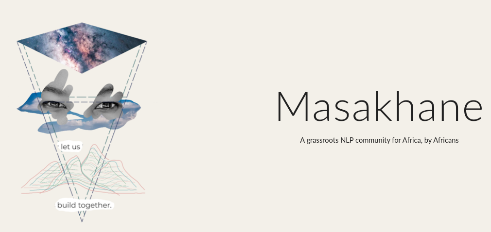
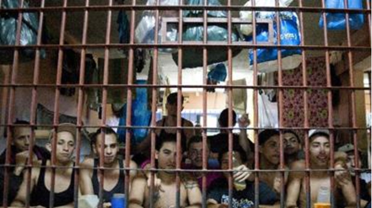
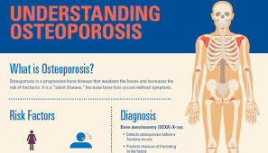
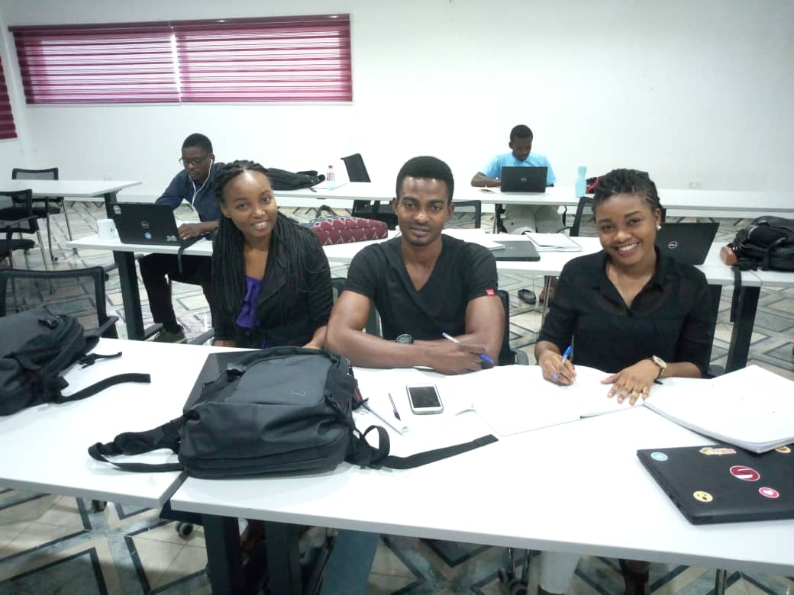
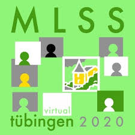

Blessing Bassey
Blessing Bassey
bbassey@aimsammi.org
CV / Resume
I am a postgraduate student at the African Masters in Machine Intelligence (AMMI). My research area is in NLP (Natural Language Processing) as well as the application of machine learning for social goods, i.e health and agriculture. Futhermore, having had an undergraduate background in Mathematics coupled with a first master’s degree in Mathematical Sciences from AIMS Cameroon, I employ the techniques and theories drawn from many fields within the context of Mathematics, Statistics, Data Analytics and Machine Learning, to solve problems and proffer solutions accros the globe, giving me the oppotunity to go into freelancing, as a Data Analyst. Aside, schooling and freelancing, I am currently working as an NLP Engineer at Proto where we imploy the various techniques of natural language processing and AI in general to create chatbots that help boost customers lifetime value and automation rates across emerging markets.
Msc. Machine Intelligence.
Oct 2019 - Oct 2020
Msc. Mathematical Sciences.
Sep 2018 - July 2019
Bsc. Mathematics.
Sept 2012 - June 2016

|
Cassava Disease Classification. |
|
Object Tracking in Images or Videos. |

|
Object Detection, Segmentation and Human Pose Estimation. |
|  |
Neural Machine Translation |
|
EDA and Topic Modelling on Tweet Data |
|  |
Statistical Methods for Predicting Prisons Population |
|  |
AN EDA and Inferential Statistics of Osteoprious Disease in Saudi Arabia |
|  |
Predicting student final grade using Machine Learning models |
|
A predictive analysis using the Pareto (80/20) principle |
{kind=link}
|
International Conference on Learning Representations (ICLR). |
|
Womentech Network |
|  |
The Machine Learning Summer School (MLSS) |
|
International Conference on Machine Learning (ICML) |